CS184/284A Spring 2025 Homework 4 Write-Up
Names:
Link to webpage:
cs184.eecs.berkeley.edu/sp25
Link to GitHub repository:
cal-cs184-student.github.io/hw-webpages-jr
Overview
I've developed skills and knowledge on how silumated materials are created through the modeling of cloth physics. I worked on developing a spring and mass system in part 1, to modeling how the cloth itself should move in part 2, to finally modelling interactions of the cloth when it contacts other materials in part 3.
Part 1: Masses and springs
Here is an example 2x2 gridlike structure using an HTML table. Each tr is a row and each td is a column in that row. You might find this useful for framing and showing your result images in an organized fashion.
|
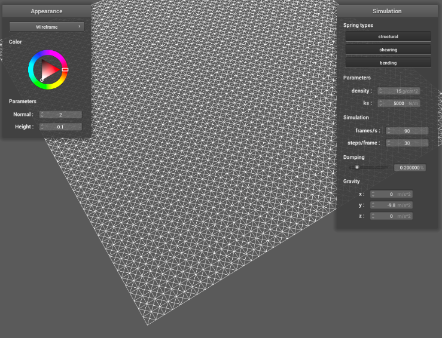
point masses and springs
|
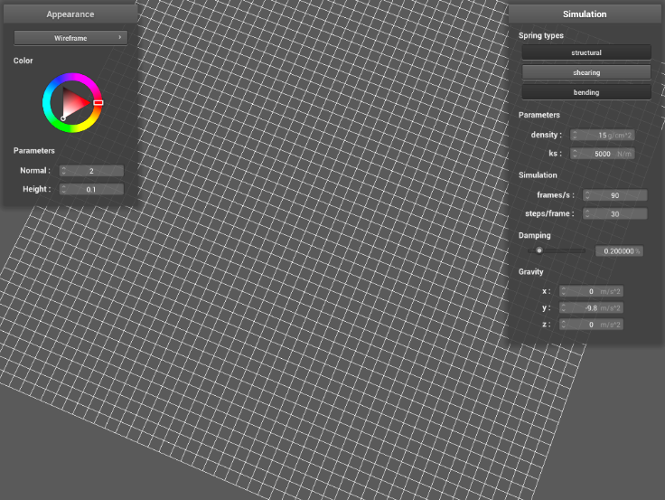
without shearing constraints
|
|
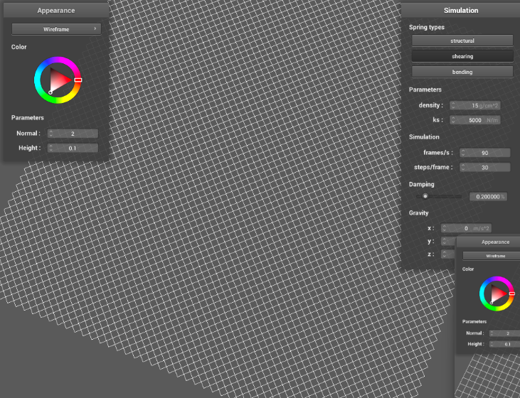
only shearing constraints
|
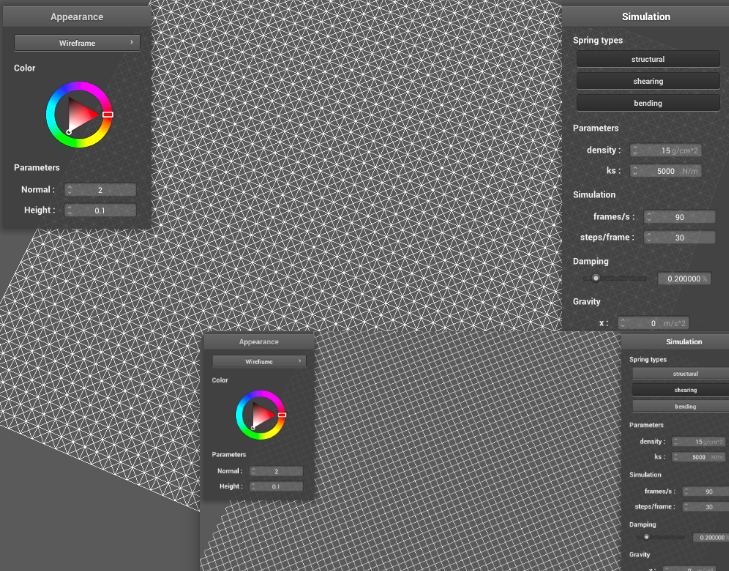
all contraints
|
Part 2: Simulation via numerical integration
The spring constant (ks) visually impacts the resting point. A lower ks (image 1) results in a lower resting point than a higher ks (image 2) because a lower-powered spring would naturally extend more at its resting state due to the constant gravitational force. Density has the opposite effect (as depicted in image 3 and 4) because with a lower density of springs, there is less overall spring force opposing gravity. With a low damping (image 5), the cloth has a lot of bounce because all noise values from its movement are retained. With high damping (image 6), there is little bounce because those noise factors are being smoothed out.
|
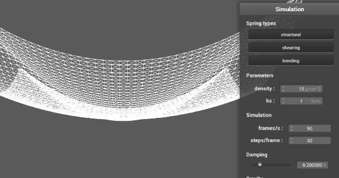
1: low ks
|
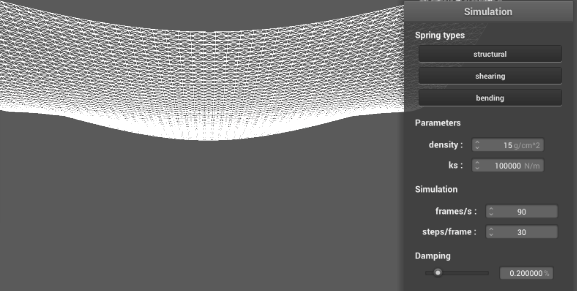
2: high ks
|
|
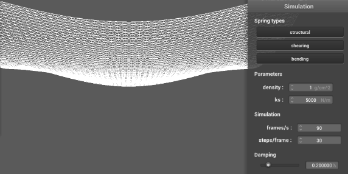
3: low density
|
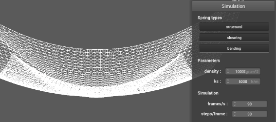
4: high density
|
|
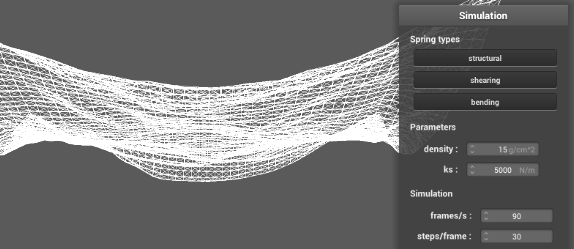
5: low damping
|
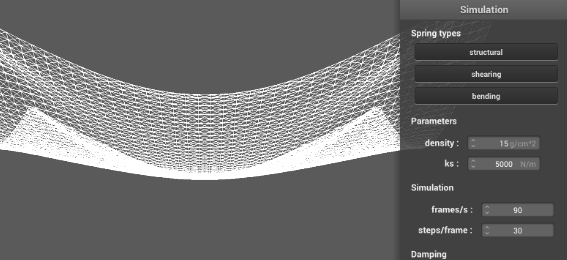
6: high damping
|
|
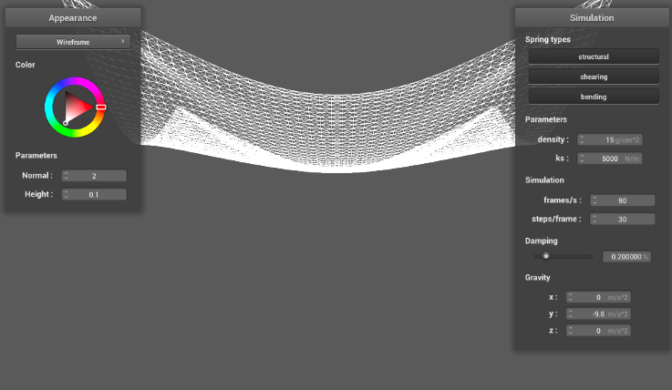
final resting place
|
Part 3: Handling collisions with other objects
With a lower ks, the cloth has less srping force keeping it rigid, and therefore folds over the sphere in a form-fitting manner, it's more easily bent by its own weight and the force of gravity. As ks, increases, the more rigid the cloth gets and the less it bends around the sphere'
|
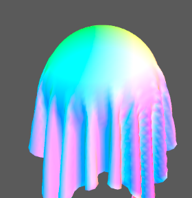
ks = 500
|
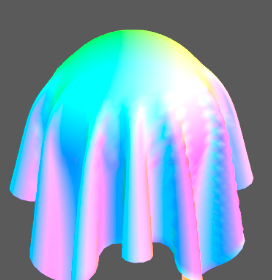
ks = 5,000
|
|
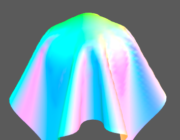
ks = 50,000
|
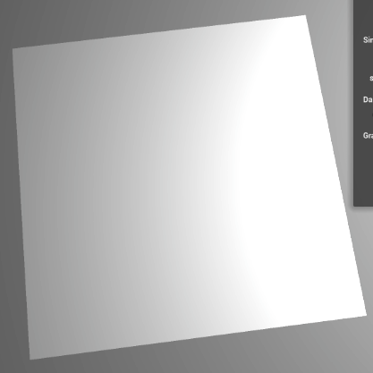
cloth at resting state
|
Part 4: Handling self-collisions
The first three images (1a, 1b, and 1c) exemplify my cloth falling at standard parameters for density and ks. After playing with the density value, a lower density results in less rippling of the fabric, while a high density results in a lot of wrinkles forming as the cloth crumples on itself. A low ks has this same effect, while a higher ks has the same effect as a low density as described earlier in part 2.
|
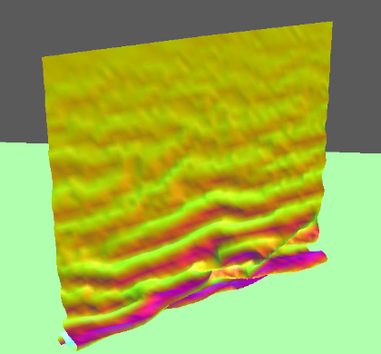
initial self-collison
|
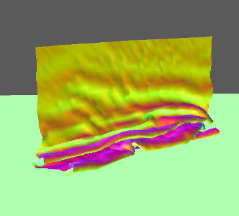
mid-fall
|
|
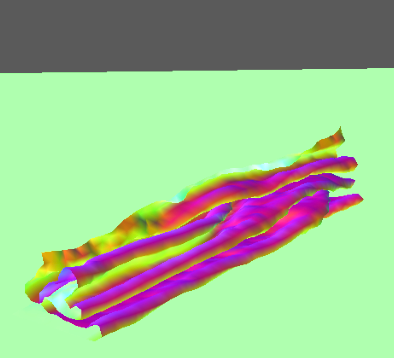
restful state
|
Part 5: Shaders
Unfortunately, I never finished part 5 :(.